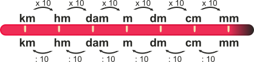

Calculadora de conversão - medidas de comprimento
Faça os seus calculos de conversão de comprimentos de forma simples e fácil com a calculadora de conversão. Escolha a unidade desejada e a unidade de conversão, ou seja, para qual unidade deseja converter. 😉
Escolha um valor
- milímetro(s) cúbico(s) (mm)
- centímetro(s) cúbico(s) (cm)
- decímetro(s) cúbico(s) (dm)
- metro(s) cúbico(s) (m)
- decâmetro(s) cúbico(s) (dam)
- hectômetro(s) cúbico(s) (hm)
- quilômetro(s) cúbico(s) (km)
Resumão - medidas de comprimento
"As unidades de medidas de comprimento surgem para suprir a necessidade do ser humano de medir vários tipos de distâncias. Existem várias unidades de medidas de comprimento, a utilizada no sistema internacional de unidades é o metro, e seus múltiplos (quilômetro, hectômetro e decâmetro) e submúltiplos (decímetro, centímetro milímetro).".
